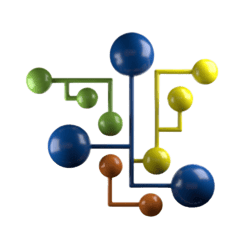

Bem vindo(a) ao meu Portfólio!
Aqui compartilho minhas experiências, habilidades, ferramentas e projetos de análise e ciência de dados.
Sobre mim
Sou graduado em Biologia e atualmente trabalho como analista de dados na Peroptyx.
Meu principal objetivo é o aperfeiçoamento profissional na área de dados. Tenho como paixão o aprendizado contínuo e o conhecimento, acreditando que eles juntos são a ferramenta mais poderosa para mudar o mundo.
Sou comprometido, ágil e aberto a novas ideias. Busco enfrentar desafios e promover resultados. Me sinto apto a me desenvolver como profissional da área, utilizando meu conhecimento para elaborar ou aprimorar soluções de dados relevantes para empresas.
Em abril de 2024, comecei a prestar serviços para a Peroptyx, empresa que fornece soluções de dados, Machine Learning e avaliação de data models para empresas globais de tecnologia e finanças. Atuo como analista, fazendo a interpretação crítica dos dados, visando garantir sua precisão e qualidade para aprimorar a eficiência de modelos de Machine Learning. Elaborei uma metodologia própria que otimizou o tempo de realização de tarefas em 40%, aumentando a eficiência do processo.
Background
Bacharelado em
Ciências Biológicas
Data Analysis
using Python

SQL para Análise
e Ciência de dados
Data Analytics
com Power BI
Ferramentas

MySQL

Python

Power BI

Pandas

Numpy

Matplotlib

Seaborn
Projetos
Análise do E-commerce Olist - Dashboard
Nesse projeto, realizei um dashboard para análise e acompanhamento das vendas do e-commerce, com foco em seu desempenho financeiro, comportamento dos clientes e eficiência logística. A proposta foi acompanhar o andamento das operações e do negócio, através da transformação dos dados em informações via Power BI.
Ferramentas utilizadas:
• MySQL
• Power BI

Curitiba Apartments Prices - Python
Nesse projeto, utilizei Python para analisar dados de 18 mil apartamentos de Curitiba, explorando os preços e seus principais influenciadores. A proposta foi a identificação das variáveis mais impactantes no valor e, além disso, fornecer insights para compradores, vendedores e investidores, permitindo uma compreensão mais aprofundada do mercado imobiliário local.
Ferramentas utilizadas:
• Python / Jupyter Notebooks
• Pandas / Seaborn / Numpy / Matplotlib / Pydeck
Análise descritiva com SQL - Dengue
Nesse projeto, utilizei SQL para analisar dados da incidência de casos de dengue no Brasil, no período de 2000 a 2019. O objetivo principal foi identificar padrões e tendências no número de casos de dengue, além de procurar fatores que influenciam essas variações, como fatores climáticos, socioeconômicos e a distribuição da doença nas diferentes regiões do país.
Ferramentas utilizadas:
• MySQL
Entre em contato
Entre em contato pelos botões localizados do lado esquerdo da página (PC) ou no rodapé (Mobile).
-
Endereço
Curitiba - Paraná - Brasil
-
Telefone
(41)99936-3933
-
Email
Email